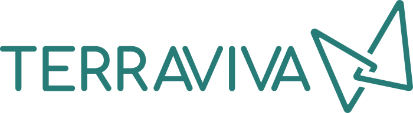
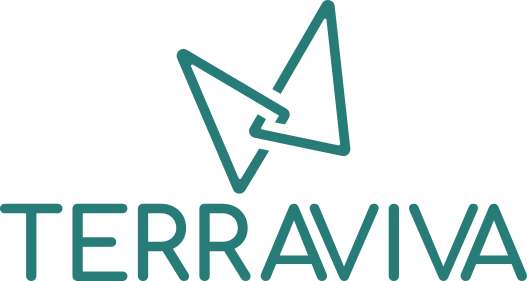
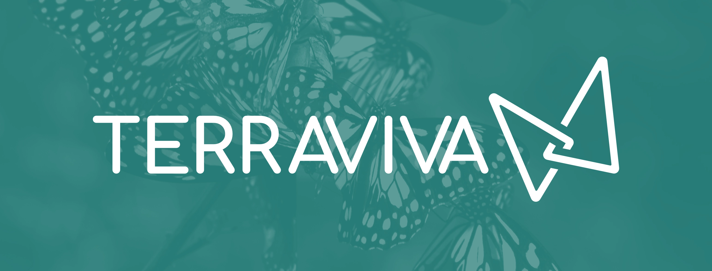
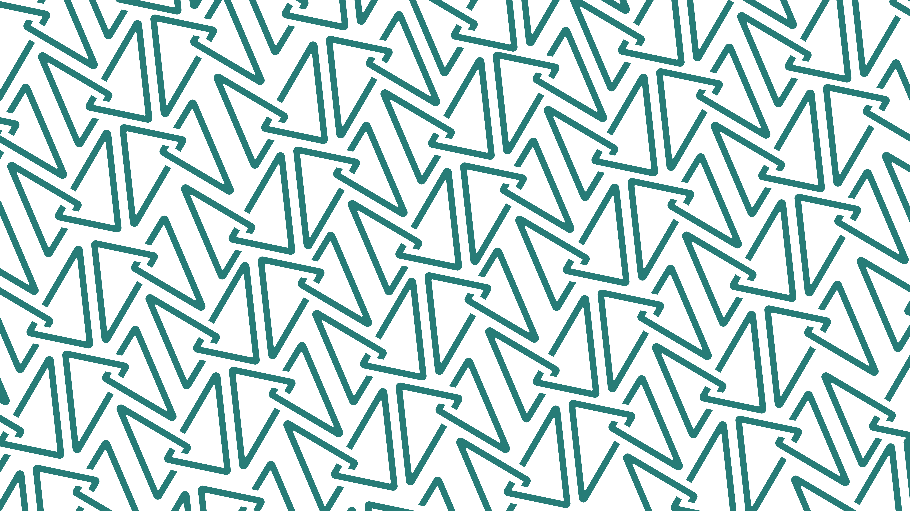
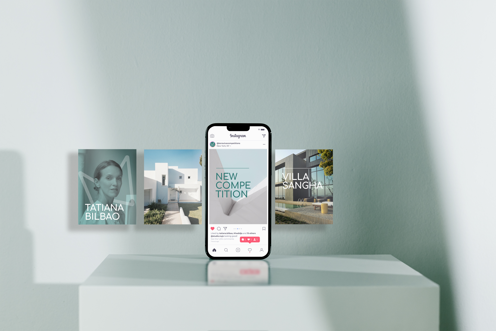
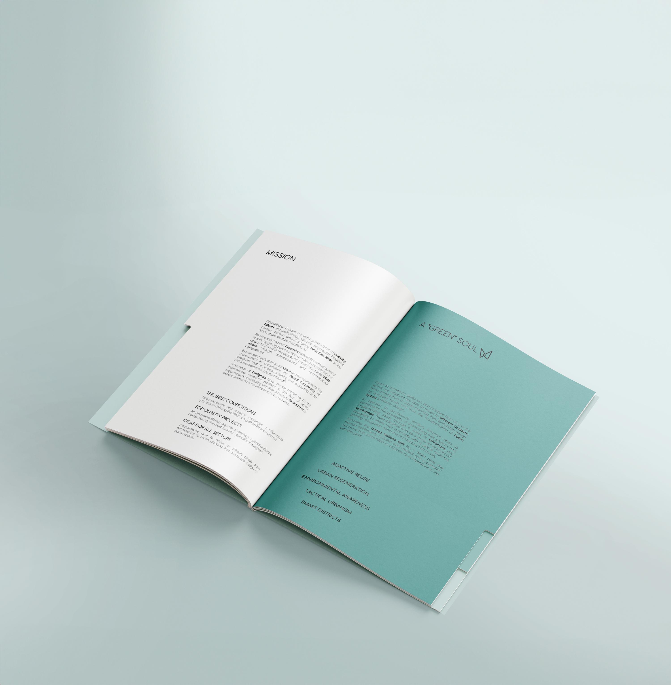

_branding _logo design
_branding _logo design
This logo's main idea is based on TerraViva's philosophy, which promotes innovative practices focused on environmental and social sustainability.
A lateral idea has been sought in the work process, always thinking outside the box.
The logo proposed for TerraViva goes beyond simple graphic representation; it embodies the fundamental values of sustainability, innovation, and aesthetic beauty.
Choosing a butterfly made of golden triangles results in a visually striking and conceptually profound emblem. The butterfly, a universal symbol of transformation and renewal, merges with the geometric precision of golden triangles and geometric shapes; it represents the harmonious fusion between natural beauty and mathematical accuracy.




Stefania Lo Bianco & Leandro Marin, 2023